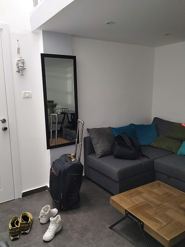
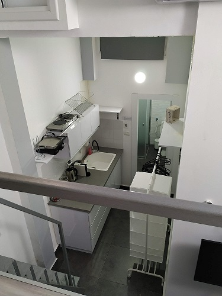
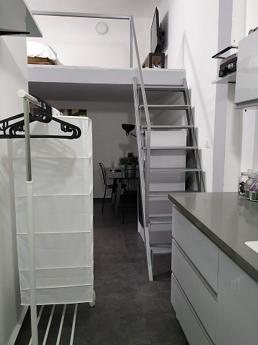
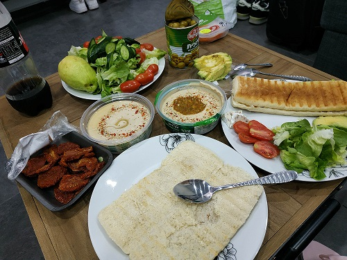
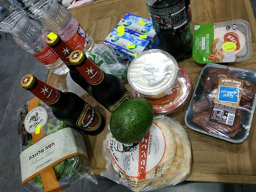
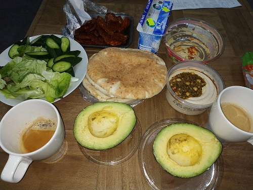

That time we decided not to use Booking for researving a hotel, but use Airbnb. First two or three people didn't approve our reservations for a long time and then regected. Then we started to write to hosts before making a reservation, however in this case hosts boosted prices.
One guy approved our request. It was a small apartment with a balcony in the center of Florentin, area where live youthful and yuppie. We were already dreaming how we would spent time there, but unfortunately, after a while, he told us that his house owner got to know that he rented this flat to another people and was going to go to court. He cancelled our reservation and took away a flat from an Airbnb. I hope everything is OK with that guy and his host excused him.
We ended up in an apartment on Eilat Street 44 and it was gorgeous. Everything were new there exactly like on photos, some cooking staff still had stickers with a bar code frome a shop. The most interesting thing for me was that a bed was on the second floor. First of all I was afraid of a perpendicular staircase that we had to use for reaching a bedroom, but then understood all charm. It's really cool to live in a flat with high ceiling.



We used kitchen only for preparing breakfasts. It was coffee and so tasty sandwiches with hummus. We bought fresh greens, cucumbers, bread, cheese, hummus, strawberries, avocado, yoghurt, sun-dried tomatoes and this food didn't annoy us at all. Average prices in shekels are: one unit of hummus 13.90, bread 13.90, some tomatos 14.90, coca-cola 1.5 litres 6.50, a bottle of wine 40.00, a bottle of bear 16.0, a bottle of olives 9.90.



It was a pleasure to return to that apartment after a long walks and have a rest there. By the way, location was convinient. About 10-15 minutes to the beach and the same distance to the old city.
Summaries:
1 – It's more convenient to buy everything at shops because there were clear prices, the same as in the market and possible to pay by card.
2 – Hotel should be at the center, for saving time to get to sightseen places and beach.
3 – It's a good idea to reserve a hotel with a balkony if you are going to have a rest in a country with a warm climate, for ventilation and just for sitting there and enjoying in the evening.